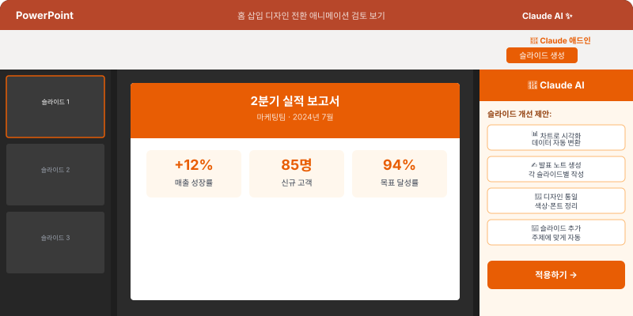

🔌 "Claude 탭 전환이 귀찮아요" — 해결책이 있어요
AI를 쓸 때 가장 불편한 점 중 하나는 작업하던 프로그램을 나와서 Claude 탭으로 갔다가 다시 돌아오는 것이에요. 플러그인(확장 프로그램)을 쓰면 지금 작업 중인 곳에서 바로 Claude를 쓸 수 있어요.
💡 플러그인의 장점: 탭을 왔다갔다 할 필요 없이, 이메일을 쓰다가 바로 AI 도움을 받을 수 있어요. 업무 흐름이 끊기지 않아요.
🌐 크롬 확장 프로그램 설치하기
크롬 브라우저에 Claude를 연동하면, 웹에서 작업하면서 바로 AI 도움을 받을 수 있어요.
Claude for Chrome 설치 방법
- 크롬 브라우저를 열고 Chrome 웹 스토어 접속
- "Claude" 검색 → Anthropic 공식 확장 프로그램 설치
- 브라우저 오른쪽 상단에 Claude 아이콘이 생김
- 아이콘 클릭 → Claude 계정으로 로그인
크롬에서 활용하기
- 웹페이지 요약: 긴 기사나 문서 페이지에서 Claude 아이콘 클릭 → "이 페이지 요약해줘"
- Gmail에서 활용: 이메일 작성 중 Claude 호출 → 내용 다듬기, 번역, 답장 초안
- 검색 결과 분석: 검색 결과 여러 개를 한 번에 분석 요청

📊 엑셀(Excel)에서 Claude 쓰기
엑셀 작업 중에 "이 함수를 어떻게 쓰지?", "이 데이터를 어떻게 정리하지?"라는 고민이 생길 때, Claude에게 바로 물어볼 수 있어요.
방법 1: 엑셀 Add-in 설치
- 엑셀 상단 메뉴 → "삽입" → "추가 기능"
- "Office 추가 기능" 스토어에서 "Claude" 또는 "AI" 관련 도구 검색
- 설치 후 엑셀 오른쪽 패널에서 AI 기능 사용
방법 2: Claude에 데이터 붙여넣기 (가장 쉬운 방법)
설치 없이도 바로 할 수 있는 방법이에요:
- 엑셀에서 데이터 범위 선택 → 복사 (Ctrl+C)
- Claude 대화창에 붙여넣기
- "이 데이터를 분석해줘" 또는 "이 데이터 정리 방법 알려줘"
📋 엑셀에서 자주 쓰는 요청 예시:
• "이 데이터에서 중복값을 제거하는 VLOOKUP 수식 알려줘"
• "A열과 B열을 기준으로 피벗 테이블 만드는 방법 알려줘"
• "이 숫자들의 패턴을 분석하고 이상치(아웃라이어)를 찾아줘"
• "이 데이터를 조건부 서식으로 시각화하는 방법 알려줘"
• "이 데이터에서 중복값을 제거하는 VLOOKUP 수식 알려줘"
• "A열과 B열을 기준으로 피벗 테이블 만드는 방법 알려줘"
• "이 숫자들의 패턴을 분석하고 이상치(아웃라이어)를 찾아줘"
• "이 데이터를 조건부 서식으로 시각화하는 방법 알려줘"
📊 파워포인트(PowerPoint)에서 Claude 쓰기
발표 자료 만들기, 슬라이드 구성 고민 — Claude가 강력한 도우미가 됩니다.
발표 자료 구성 요청하기
"이번 분기 마케팅 성과 보고 PPT를 만들어야 해.
대상: 임원진 (10분 발표)
포함할 내용: 캠페인 성과, 주요 지표, 개선점, 다음 분기 계획
슬라이드 목차 구성을 제안해주고, 각 슬라이드에 들어갈 핵심 내용도 알려줘."
대상: 임원진 (10분 발표)
포함할 내용: 캠페인 성과, 주요 지표, 개선점, 다음 분기 계획
슬라이드 목차 구성을 제안해주고, 각 슬라이드에 들어갈 핵심 내용도 알려줘."
슬라이드 텍스트 다듬기
- 파워포인트 슬라이드의 텍스트를 복사
- Claude에 붙여넣고 요청: "이 내용을 임원 보고용으로 더 간결하게 다듬어줘"
- 결과를 다시 슬라이드에 붙여넣기

💡 파워포인트 꿀팁: "이 내용을 슬라이드 제목 + 3개 불릿 포인트 형식으로 정리해줘"처럼 구체적인 형식을 지정하면 바로 복붙할 수 있는 형태로 받을 수 있어요.
📱 모바일에서도 Claude 쓰기
스마트폰에서도 Claude를 쓸 수 있어요. iOS App Store 또는 Google Play에서 "Claude" 앱을 설치하면 언제 어디서나 AI 도움을 받을 수 있습니다. 외출 중에 갑자기 이메일 답장이 필요할 때 특히 유용해요.